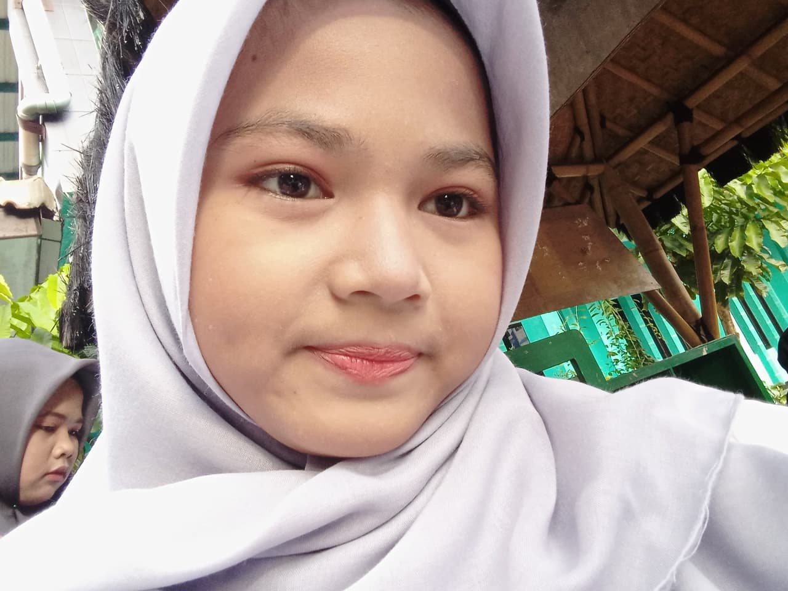

Haiii Pembacaa!! Akuu Fairuztaqii Hamba Allah, akuu bikiin inii buatt Wiwin dalam rangka memperingatii harii ini, pokoknya hari pas kamu baca aja hari apa. Hehehe
Kamu tau siapa itu Wiwin? Pacarkulahh. Niii ada fotonya, yang itu pokoknya.
Wiwin tuhh Hamba Allah jugaa tauu, diaa orangg baik yang akuu temuin dii pasar ayam, Wiwin baikk karena dia cantikk, udah bikinn hari-hariku di pasar ayam sedikitt berwarna kalau liatt dia, orangnya ngangeninn! Di sisi lain Wiwin juga punya bakatt yang luarr biasa, yangg aku tauu... dia bisa ngerajutt, bisa narii, bisa main alat musik, bisa bikin kangen, bisa napas, bisa tidurr, bisa makan, dan.. banyak lagii lah pokoknya.
Wiwin Wulandari punya keindahannya sendiri sebagai manusia, Cantiknya khas, lesung pipinya, manisnya, dan keunuikan dalam dirinya adalah sesuatu yang dapat memberikan Energi besarr terhadap orang lain termasuk akuu. Kini Wiwin sudah umur 17 yang mana dirinya harus bertempur lebihh keras atas pendidikannya dii SMA/MAN untuk masa depannya, sangat salutt dengannya karna setiap hari ia jalani dengan santaii dan penuh kebahagiaan meskii... ada ngeluhnya tapii itu tetap terlihatt kuatt untuk dirinyaa.
ehh apalagii yaa... udahh duluu dehh, takutt kamu capek bacanyaa.